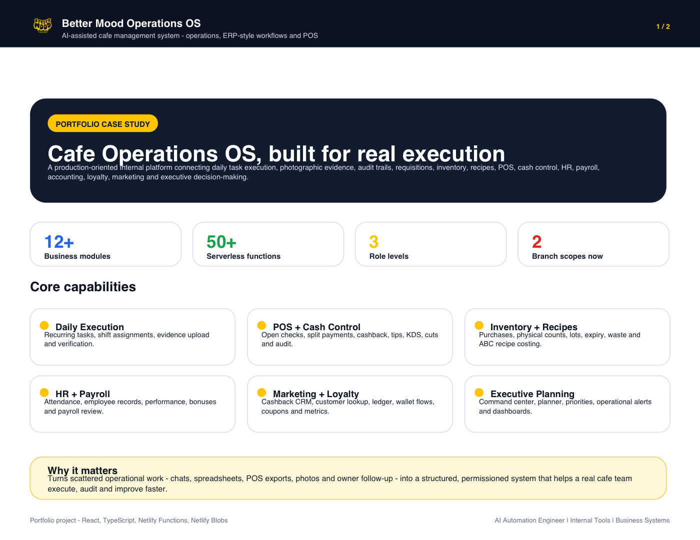

Internal operations platform
Better Mood Operations OS
AI-assisted cafe operations system connecting daily tasks, evidence, requisitions, inventory, recipes, POS, HR, payroll, finance, loyalty, marketing and executive planning.
- React, TypeScript and Vite SPA
- Netlify Functions and Netlify Blobs
- Branch-aware roles, permissions and operational state